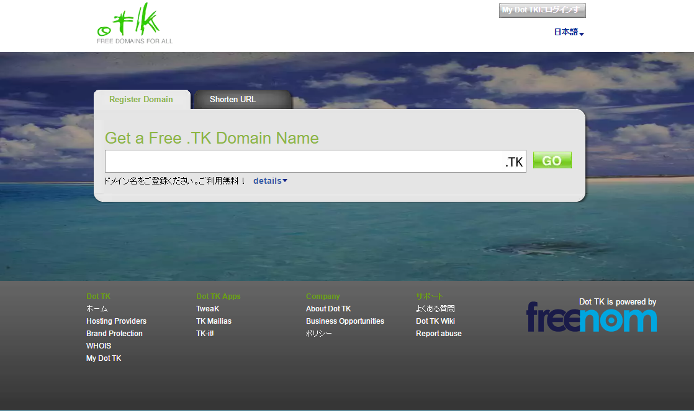

いけちゃんが暇つぶし程度に書くブログ
tkドメイン取得のススメ
このサイトも、tkドメインを使用しています。
tkドメインとはなんぞや？
まず、"ドメイン"について、簡単に説明します...と言いたいのですが、長くなるのでわからない人は検索してください。
↑"ググる"という表現を改めた人
Dot tk 
このサイトは、ikechannel.tkという独自ドメインを使って運営しております。
ふつうドメインは、.comだったら500円、.jpドメインは3000円ぐらいで購入して、さらに年間1000円ぐらいの維持費を払う必要があります。
しかし、tkドメインはそのようなものを払う必要がありません。年間の維持費もありません(更新は手動)。
tkドメインの信頼性
おいおいそんなんでセキュリティ大丈夫なのか、違法サイトとか大量に転がってたりしないかと思いますが、tkドメインを取得するサービス(Dot tk)は14年以上の歴史があり、信頼性はそんなに低くはありません。
しかも、スパムサイトや詐欺サイトなんかを作るとすぐドメイン停止されるので、安心です。
しかし、.comや.jpなどのドメインと比べると流石に劣るので、相当なケチじゃない限りはまともなドメインを取るべきかと思います。
はい。私相当なケチです。
※重要
90日間に25回以上のアクセスがない場合、ドメインが停止されます。
取得したはいいものの使わずに放置...なんてことをしていたらいつのまにか使えなくなっています。これが14年以上運営を続けられた理由の1つかも。
・tkドメイン無料版の制限
3文字以下のドメインは有料
特定の単語は有料
有料版の契約(年間約10ドル)をすれば取得できるようになりますが、お金を払うぐらいなら.comなどを取ったほうがいいかと。
取得方法
http://www.rental-server.ws/review/.tk_domain/
こちらのサイト様で詳しく説明されています。
記事が長くなるのが嫌なので、リンクを貼らせて頂きました。
超簡単に登録することができます。無料なので、ややこしい手続きは必要ありません。メールアドレスとパスワードだけでアカウントを作成できます。
さいごに
tkドメインは、用途によってはかなり使えると思います。独自ドメインを使えるブログサービスもあるので、一度試してみてはどうでしょうか。
あと、これから記事の更新は週に1~2回、水/木曜日と土/日曜日になります。